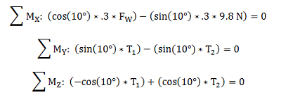

Equations of Static Equilibrium
The equations of static equilibrium are a set of mathematical equations used to describe and solve for all forces and moments acting on an object in static equilibrium. If an object is in static equilibrium, the sum of all of the forces acting on the object is zero. Also, the sum of all of the moments acting on the object is equal to zero.
Both forces and moments are represented by vectors so there are two vector equations used to describe the forces and moments on the object.
|
This diagram shows three force vectors (F1, F2 and F3) acting on an object in static equilibrium.
|
Rearranging the three vectors shows us that the sum of these three vectors is equal to zero.
|
Rather than keeping the equations as vector equations, we usually decompose each vector into its three coordinate axes (X, Y and Z). Three components can be used to describe any vector in the three dimensional world we live in. In order for a vector to be equal to zero, all components of that vector, in this case the X, Y and Z components, must be equal to zero. Breaking down each vector equation into the three scalar equations gives us a total of six equations of equilibrium.
The equations above describe all the possible equilibrium equations for a problem. Not all of the above equations will be useful though. If there are no forces or moments in a particular direction then the corresponding equation will simply state that zero (the sum of the non-existent forces or moments in that direction) is equal to zero. This is a true statement, but it does not help in solving for the unknown forces. Only equations that end up having an unknown variable in them will be useful in solving for unknown forces and moments.
Determining the Equations of Static Equilibrium:
- First draw a free body diagram of the object in static equilibrium. Identify all forces and moments acting on the object and identify the X, Y and Z coordinate axes.
- For each force or moment vector that does not line up with a coordinate axis, decompose that vector into components that do line up with the coordinate axes.
- For each of the six possible equations of static equilibrium, add all the magnitudes of the vectors in the given coordinate direction. Vectors that go in the opposite direction of the coordinate axis are assumed to have negative magnitude. The sum of all of the vector components in any direction will be equal to zero.
- Simplify the equations. You can disregard any equations that contain no unknown values.
- Once you have the equations of static equilibrium, you can solve for the unknown values in the system of equations.
Worked Problems
Worked Problem 1:
Write the equations of static equilibrium diving board in the problem below. Assume that the weight of the diving board is negligible and that the anchor points on the diving board exert forces only in the Y direction.
|
Work
|
Comments |
|
First we draw the free body diagram of the diving board. We have three forces acting on the diving board: the weight of the diver, which is known, and the forces exerted by the two anchors on the diving board, which are not known. The direction of the forces exerted by the anchors (pushing or pulling on the diving board) is not important. We assume one or the other, a negative value for F1 or F2 will simply indicate that our assumption was incorrect. |
|
|
Since all forces already line up with the coordinate axes, the next step is to write out the equilibrium equations. All forces act in the Y direction, so the X force and Z force equilibrium equations are simply 0 = 0. Since all forces lie in the XY plane, there are no moments about the X or Y axes. This means that the X moment and the Y moment equilibrium equations are simply 0 = 0. The moments about Z are taken about the left end of the diving board. |
|
|
Next we simplify the equations and eliminate the equations with no unknowns. This leaves us with a system of equations that we can use to solve for the unknown forces F1 and F2. |
Worked Problem 2:
A wind force is blowing a sign ten degrees from vertical. The sign has a mass of one kilogram and is supported by two cables at the top corners of the sign. Assume that the wind force and the weight of the sign are point loads acting on the center of gravity (point CG). Write the equations of static equilibrium for the sign.
|
Work
|
Comments |

|
We first draw the free body diagram. There is one known force, the weight of the sign, and there are three unknown forces, the two tension forces from the cables holding up the sign and the wind force. Also shown are two profile views of sign to better understand the problem. In the profile views the tension forces are broken down into their Y and Z components. |
|
We then solve for the decomposed components of the tension vectors in terms of the original tension vector. The direction of a tension force is always in the direction of the cable, so the overall tension forces are ten degrees from vertical. |
|
|
After creating the free body diagram, we can write out the equilibrium equations. Shown to the left are the force equations of static equilibrium. There are no forces acting along the X axis, so that equation is simply 0 = 0. |
|
|  |
Using the profile views we can write out the moment equilibrium equations. The forces acting on the sign create moments about all three coordinate axes. The moments about the X axis were taken about the top edge of the sign. The moments in the Y and Z directions were taken about the center of gravity. |
|
Eliminating the unhelpful equations and simplifying the equations leaves us with five equations of static equilibrium. It is also evident that the fourth and fifth equations are equivalent, so only one of these two equations will be helpful. |